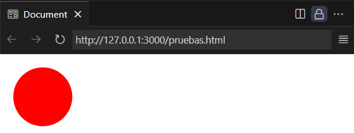
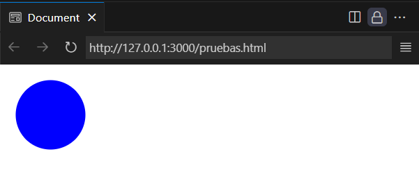
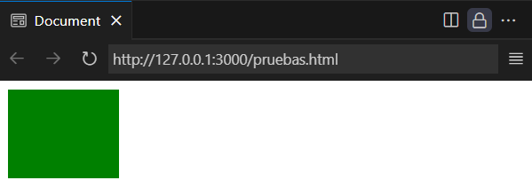
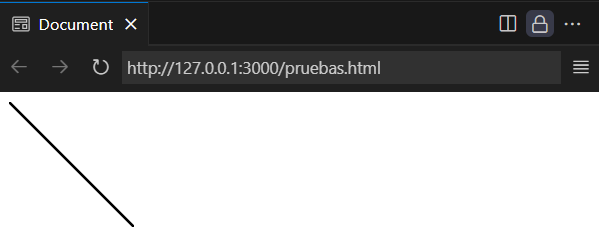
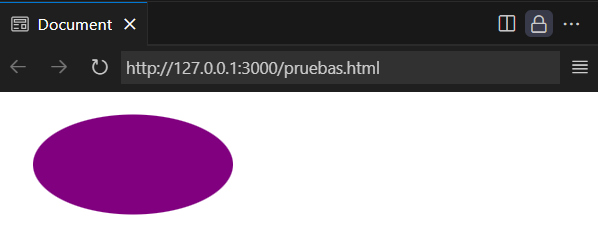

SVG Section - Web4U

SVG, or Scalable Vector Graphics, is an XML-based file format for two-dimensional vector images, which allows scaling without quality loss.
Unlike raster formats like PNG or JPG, SVG uses mathematical descriptions to define shapes and lines, making it ideal for logos,
icons, and illustrations that need to adapt to different sizes and resolutions.
Main features of SVG:
Scalability
SVG allows images to be resized without affecting quality, which is crucial for responsive websites.
Text-based
SVG uses XML code, meaning the files are textual and can be edited with text editors or vector design software.
Small file size:
Typically, SVG files are smaller than their raster equivalents, contributing to faster web page loading times.
Browser compatibility:
Most modern browsers support SVG, ensuring images display correctly across platforms.
Editing:
SVG allows easy editing of the XML code, which facilitates image manipulation and modification.
Advantages of using SVG in web design:
Improves website performance:
Smaller SVG files and the ability to scale without quality loss contribute to a better user experience and faster loading times.
Adaptability:
SVG adapts to different screen resolutions without compromising image quality, which is essential for responsive websites.
SEO:
Since SVG files are based on XML code, search engines can read the textual content of images, helping improve website visibility.
Animations:
SVG supports animations and visual effects, making it a versatile option for modern web designs.
In summary, SVG is a versatile and efficient image format offering numerous advantages in web design, especially in terms of scalability, performance, and adaptability
to different devices and resolutions.
The <svg> tag is used as a container for scalable vector graphics. Inside it, you can place other tags like <circle>, <rect>, <line>, etc.
Example:
<svg width="100" height="100">
<circle cx="50" cy="50" r="40" fill="red" />
</svg>
Here we define a container and place a red-filled circle inside it.
Result in browser:
Screenshot from browser
More information: W3Schools | Download PDF
The <circle> tag is used inside SVG to draw a circle.
Some of the attributes it can include are:
The r attribute is mandatory and defines the radius of the circle.
The (cx, cy) attributes are optional and specify the coordinates for the circle’s center. If omitted, the center defaults to (0,0).
The fill attribute fills the circle with the assigned color.
Example:
<svg width="100" height="100">
<circle cx="50" cy="50" r="40" fill="blue" />
</svg>
Result in browser:
Screenshot from browser
More information: W3Schools | Download PDF
The <rect> tag is used to draw rectangles or squares in SVG.
The mandatory attributes are width and height, which define the rectangle’s width and height.
Example:
<svg width="120" height="100">
<rect width="100" height="80" fill="green" />
</svg>
Result in browser:
Screenshot from browser
More information: W3Schools | Download PDF
The <line> tag is used to draw a straight line inside an SVG.
Required attributes include:
x1 and y1 for the starting coordinates.
x2 and y2 for the ending coordinates.
Example:
<svg width="100" height="100">
<line x1="0" y1="0" x2="100" y2="100" stroke="black" stroke-width="2" />
</svg>
Result in browser:
Screenshot from browser
More information: W3Schools | Download PDF
The <ellipse> tag is used to draw an ellipse or a squashed circle.
This tag is closely related to the <circle> tag.
To define the ellipse's radius, two attributes are required:
rx defines the horizontal radius and ry the vertical radius.
cx and cy define the center coordinates of the ellipse.
Example:
<svg width="200" height="100">
<ellipse cx="100" cy="50" rx="80" ry="40" fill="purple" />
</svg>
Result in browser:
Screenshot from browser
More information: W3Schools | Download PDF